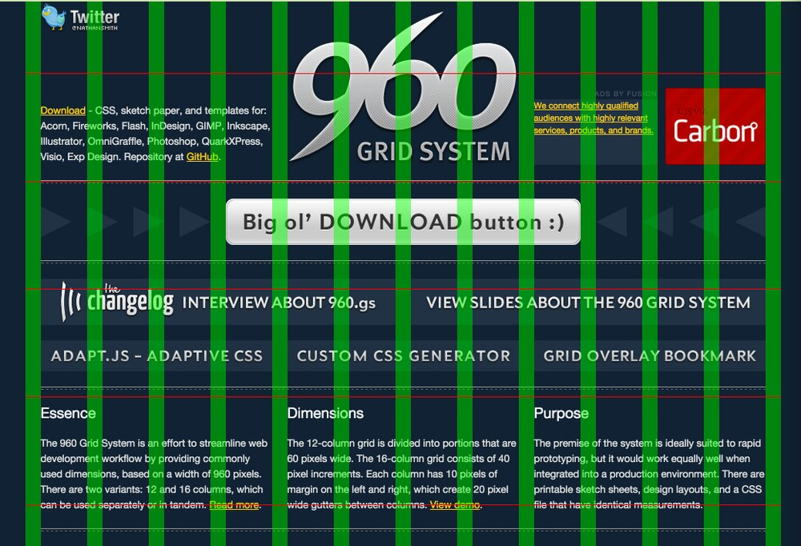

ThoughtWorks®
OOCSS
Object Oriented Cascading Stylesheets
Si Xiaojing aka Sarah
what is OOCSS
A scalable, maintainable, semantic, and predictable APPROACH to write css.
Why do we need it?
What's wrong with css?
Actually, nothing is wrong with css. CSS is simple, easy to write and understand.
But...
It is hard to maintain and use correctly.
repetition
Lots of floats, font-size references, heading levels repeated...
unmanageable
It may have started out well, but it finally become a mess...
weight war
You need to add higher priority selector in order to win...
coupling
Your css is highly reliant on your HTML...
CSS sucks
It's not that css sucks, it's that we suck.
OOCSS
Object Oriented CSS
The purpose of OOCSS is to encourage code reuse and ultimately, faster and more efficient stylesheets that are easier to add to and maintain.
Looking for patterns
How many patterns can you see?
Row pattern
Past practice
two steps to OOCSS
- Single class
- Abstract module
row's purpose
- clear each row
- control width
- horizontal alignment
-
Past practice
New Practice
abstract even further
two concepts in oocss
primary module
modifiers
| Primary module | Modifier |
|---|---|
| .row | .row-padding .row-alt1 |
Modifiers should not rewrite any style of primary modules
column pattern
column pattern

- control width
- make elements sit in one line
- control space between elements
column pattern
Can it be further abstracted?
Do we need it?
pattern column
final html
grid system
A structure comprising a series of horizontal and vertical lines, used to arrange content.
benifit for designers
Provide an easy and manageable way for you to structure and present content.
benifit for developers
Easily build a layout
box pattern
Exercise(20 Mins)
- Define the box module
- Write the corresponding DOM structure